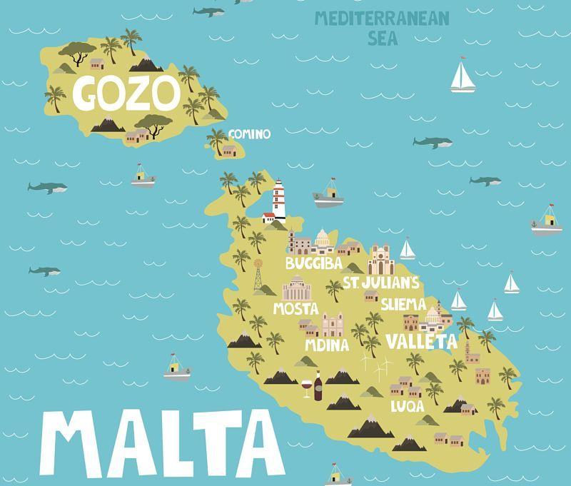

Información general sobre Malta
Malta, compuesto por un archipélago, se encuentra situada en el mar Mediterráno, al sur de Italia y al norte de Libia. Es un popular destino turístico con un clima cálido, numerosas áreas recreativas y monumentos arquitectónicos e históricos, incluidos tres sitios del Patrimonio Mundial de la UNESCO.
